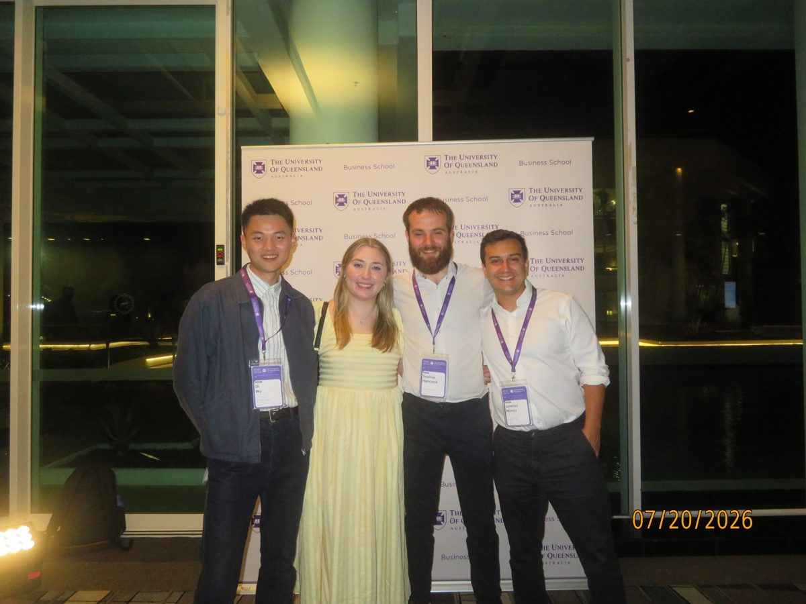
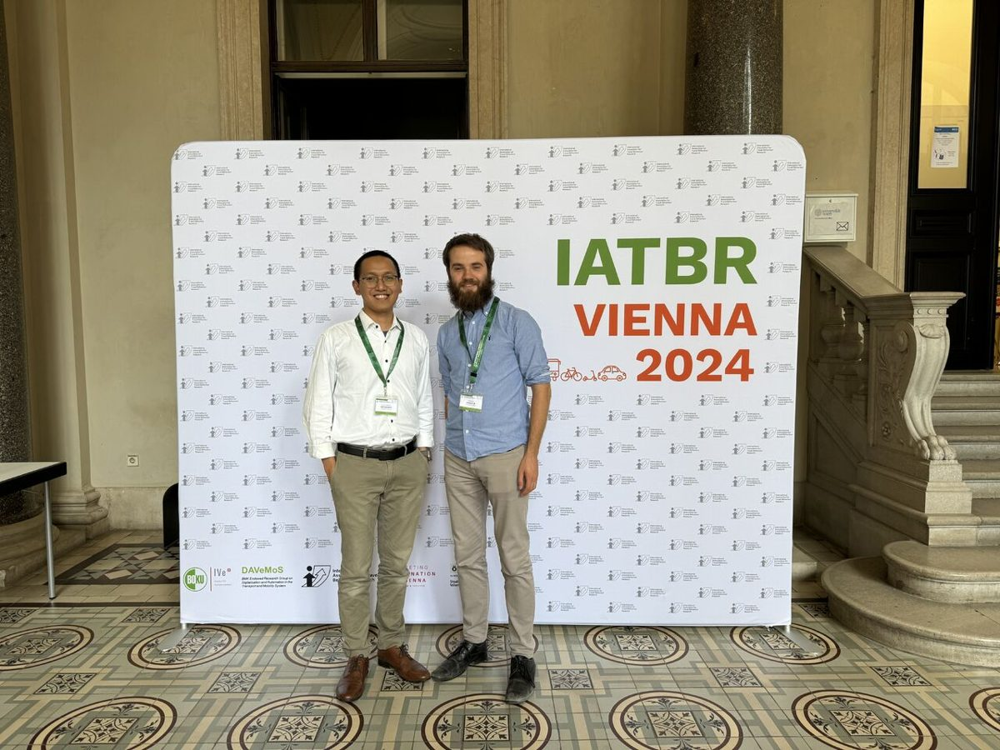

Prospective students and collaborators
If you’re interested in a PhD, a research visit or working together on a project, I’d be glad to hear from you, especially where choice modelling meets psychology, behavioural change or new sources of data. Get in touch at T.O.Hancock@leeds.ac.uk.
7 current · 3 completed
15 as lead supervisor
Best poster, hEART 2025

Current PhD students
-
Lorenzo Muñoz Torrejon
Developing new behavioural models at the intersection of econometrics and machine learning
- Using machine learning metrics to provide deeper insights into the performance of choice models Submitted Sep 2026
-
Di Wu
Dynamic choice modelling of residential mobility: life-course, intention–behaviour dynamics, and forward-looking behaviour
Papers and talks with Di (1) → -
Olivia Barnes
Investigating a typology of valence framing using choice modelling
- Revisiting framing effects: integrating multiple valence frames in choice modelling Submitted Aug 2026
- Steering the frame: using choice modelling to test framing effects in South African drink-driving campaign design Submitted Oct 2026
-
Faza Bastarianto
An integrated framework of agent-based and activity-travel behaviour modelling: a case study from Greater Jakarta, Indonesia
- Agent-based models in urban transportation: Review, challenges, and opportunities European Transport Research Review, 2023
- ‘Mind the Gap’ — The impact of discrepancies between Google Maps API and reported travel data in the Global South Case Studies on Transport Policy, 2025
- Who commutes how in a megacity? Modelling complex travel behaviour in the Global South Submitted Oct 2025

With Faza at IATBR 2024, Vienna
External PhD students
-
Liam Gabb
Meaningful dying in Alzheimer’s dementia: understanding priorities at the end of life for people with dementia
Papers and talks with Liam (1) → -
Rachel Clapham
How can anticoagulant thromboprophylaxis be personalised to reduce the risk of venous thromboembolism?
Visiting PhD students
-
Bozhan Qin
Cumulative prospect theory-guided deep neural networks for travel behaviour analysis under uncertainty
Completed
-
Yu Wang
Using multiple sources of data to understand the heterogeneous preferences of travellers for developing differentiated policies
- Influence of perceived risk on travel mode choice during Covid-19 Transport Policy, 2024
- Investigating the changes in residential location and commute patterns during the pandemic using smart card data Travel Behaviour and Society, 2025
- Modelling residential relocation behaviour combining passive revealed preference data and stated preference survey data Transport Policy, 2025
- Nudging urban travellers towards greener travel modes: A virtual reality experiment Transportation Research Part A: Policy and Practice, 2026
Award Best poster, hEART 2025 (for the virtual reality nudging paper)
Current position: Postdoctoral researcher, Choice Modelling Centre, University of Leeds (we continue to work together)
Papers and talks with Yu (19) → -
Shujing Zhang
- Exploring taste heterogeneity and substitution patterns in dockless bike-sharing parking preferences Transportation Research Part A: Policy and Practice, 2026
-
Xin Zhang
- Coordination behaviour in travel mode choice: An experiment on autonomous vehicle services Transportation Research Part C: Emerging Technologies, 2026
MSc dissertations
| Year | Student and dissertation | My role |
|---|---|---|
| 2026 | Amber Maughan Can we predict students’ behavioural change in relation to gambling? | Lead supervisor |
| 2026 | Qi An A moderated mediation model of time orientation, self-regulation and sleep health | Lead supervisor |
| 2026 | Yulan Li Associations between personality traits, lifestyle behaviours, and mental health outcomes in university students | Lead supervisor |
| 2026 | Weronika Pogubilo The relationship between financial stress and intrinsic and extrinsic academic motivation in university students | Lead supervisor |
| 2026 | Pranav Ajith The impact of travel and activity behaviour on university students’ health and wellbeing: a study at the University of Leeds | Lead supervisor |
| 2025 | Yuefan Zhou Cultural differences in graduate work location preferences: evidence from UK MSc students | Lead supervisor |
| 2025 | Xiaohan Lin Who will choose new modes: what is the impact of survey representativeness? | Lead supervisor |
| 2024 | Xinyi Liang Uncovering consumer preferences for food delivery service | Second reader |
| 2024 | Yuehe Wang Why do people quit cycling? | Second reader |
| 2024 | Kaining Li Regional variations in travel mode choice: a comparative study of bicycles and electric scooters in UK cities | Lead supervisor |
| 2024 | Weiwei Jiang Urban travel choices and green travel strategies: an empirical analysis using London and Leeds as case studies | Lead supervisor |
| 2024 | Nina Zhong The integration of eye-tracking data into choice models for VR data | Lead supervisor |
| 2023 | Alice Moriamez Modelling moral decisions in the context of self-driving cars | Lead supervisor |
| 2023 | Mutondi Makhado A review of gender differences in travel behaviour models | Lead supervisor |
| 2023 | Tirtha Patel Pedal power for a greener London: potential of active travel in decarbonising the first and last mile | Second reader |
| 2022 | Hugo Irving Autonomous vehicles and ethical decision-making: should the public decide? | Lead supervisor |
| 2022 | Ru Ya What factors drive people to choose certain modes of transport including existing and emerging ones in China? | Lead supervisor |
| 2022 | Azam Ali Modelling time use during the Covid-19 pandemic using econometric and machine learning algorithms | Second reader |
| 2021 | David Meester Decision field theory for understanding health economic choice behaviour: an application to a discrete choice experiment of tobacco preferences Later developed into a journal paper: Can decision field theory enhance our understanding of health-based choices? Evidence from risky health behaviors Health Economics, 2023 · Papers and talks with David (5) → | Second supervisor · University of Oxford |
| 2021 | Yutian Miao A review of the use of gender differences in travel behaviour models | Lead supervisor |
| 2021 | Fan Wang Activity-based mode choice model: a case study from China | Second reader |
| 2020 | Ching Lin Putting gender in the picture of quantitative transport studies: gender differences in commute distance and mode choice in the modern Netherlands | Second reader |